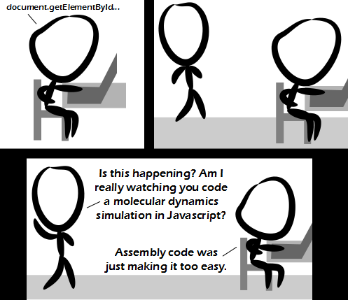

Comic JK 849
When I Feel Like It
⇤
<
?
>
⇥
>0 can be much faster than Math.floor(x)? The rabbit hole goes deep." alt="Postmature Optimization" />
⇤
<
?
>
⇥
Forum
.
RSS
.
Digg
.
Facebook
.
Reddit
.
Twitter
.
Stumbleupon
Enter your thoughts on number 849 here. Please, no spamming, trolling, phreaking or going deeper down the rabbit hole. Ahhh Javascript, you horrid drain on my time, how I love thee, let me count the ways >way #1 jquery I'm pretty sure that Javascript plus an HTML5 canvas would be much easier. Performance might take a hit though, with the whole single-threaded thing. use a worker thread - javascript has them now, although due to lack of shared memory and access to dom, you'd better not poll the workers too often > What's the point of worker threads without some sort of completion signal? If you're "polling" other threads, you're doing it wrong. oh, and emscripten dude says that the output of his stuff is within 2-3x of optimised C (when run on modern javascript engines) ... but x>>0 works like Math.ceiling for negative numbers... >That is true. >> I don't get that x>>0 thing. In many languages, that's just a complicated way for "(int) x", and in (x86) assembly, SHR 0, x just clears some flags. >>> Personally, I prefer ~~x for conversion to int, it complements !!x conversion to bool operation nicely. Some also write 0|x. Wow, it's 5 pm EST and still no your Bayesian probabilistic inference jokes. I'm insulted. >There have been plenty throughout the day, but have since disappeared. >>I, for one, am glad they are gone. They were not fitting with the clever nerd humour of comicjk. Your mother's all think that you are a "super cool dude"! You should all be very very proud! >+0 >> Oh c'mon Milhouse, it is totally true. >>> Hey it's better than -1! cheat and use jquery. Javascript is a (dis)functional language.